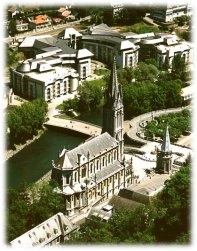
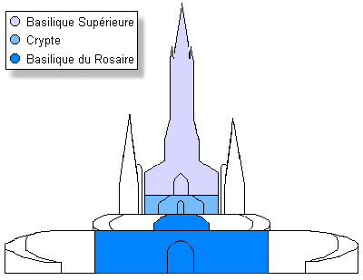
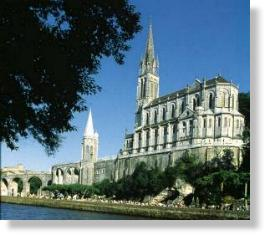
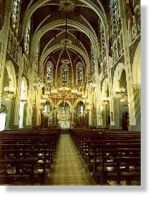
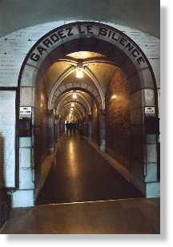
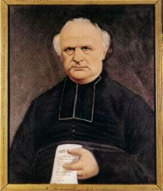
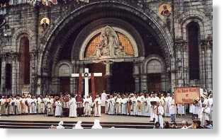

BERNADETE PERMANECE FIEL
 -
Sem dizer uma palavra, Bernadete pegou o seu capuz
e seguiu para a gruta. Lá já estavam
mais de 600 pessoas. Foi rezado o terço e feito alguns exercícios
de penitência, mas "Aquerò
" como ela chamava a Aparição, não apareceu.
-
Sem dizer uma palavra, Bernadete pegou o seu capuz
e seguiu para a gruta. Lá já estavam
mais de 600 pessoas. Foi rezado o terço e feito alguns exercícios
de penitência, mas "Aquerò
" como ela chamava a Aparição, não apareceu.
No dia 27 de fevereiro quando chegou na gruta a Aparição já estava lá esperando por ela.
No dia 28 mais de 1.150 pessoas presenciaram diversas práticas de penitência e a reza do terço em êxtase. É como dizia:
- "É por penitência, por mim primeiro, pelos outros depois" .
No dia seguinte, segunda-feira, 1º de março, a multidão foi calculada em 1.500 criaturas e viam-se pessoas de todas as classes. Para a curiosidade geral, desponta entre elas a batina preta do Padre Dêsirat. Ele não é de Lourdes e não sabe da proibição imposta ao clero pelo Abade Peyramale . Sua presença causa sensação e em poucos momentos vê-se na primeira fila, com sua miopia compensada por óculos de grossas lentes, numa posição bem próxima a vidente. A descrição que ele faz dos fatos diz tudo:
"O sorriso
ultrapassa toda a expressão humana. O artista mais hábil, o ator mais
consumado, nunca poderá reproduzir-lhe o encanto e a graça!
Impossível imaginar. O que mais me tocou foi a alegria e a
tristeza que se lhe desenhavam no rosto da jovem. Quando um destes
fenômenos sucedia ao outro, era com a rapidez do relâmpago. No
entanto nada de brusco: uma transição admirável. Eu tinha
observado a criança quando ela chegou e se dirigia à gruta.
Tinha-a observado com escrupuloso cuidado. Que diferença entre
o que ela era e o que eu vi no momento da Aparição! Respeito,
silêncio, recolhimento por toda a 
Foi também neste mesmo dia, quando ocorreu a 12ªAparição que aconteceu o primeiro dos sete milagres escolhidos pelo Bispo e considerado realmente como "Obra de Deus".
"Catarina Latapié, proveniente de uma queda de um carvalho, na qual subira para tirar bolotas para os porcos, teve o braço deslocado e dois dedos da mão direita dobrados e paralisados. O fato aconteceu em outubro de 1856 e o médico só conseguiu consertar o seu braço, mas os dedos não tiveram jeito. E isto a impedia de fazer o seu trabalho, não a deixava tricotar e nem fiar, estava sendo a sua ruína. Apesar de estar grávida de 9 meses, saiu a pé de sua casa na noite do dia 28 de fevereiro para Lourdes, distante 7 quilômetros, levando os seus dois filhos mais novos. Assiste a Aparição do dia 1º de março e fez fervorosas preces suplicando a intercessão de Nossa Senhora junto a DEUS, pedindo a sua cura. Terminada a Aparição, ela caminhou até a gruta e mergulhou a mão na fonte que ali surgiu, no fundo da gruta e cujas águas deslizavam mansamente formando um pequeno regato que corria para o Gave.
Um estremecimento acompanhado de uma grande suavidade invadiu todo o seu ser. Ela sentiu de repente, voltar a flexibilidade aos seus dedos. Vibrou de alegria e chorou de satisfação. Emocionada iniciou os seus agradecimentos pela graça alcançada, quando súbitamente sente uma violenta dor nas entranhas, como prenúncio do próximo nascimento de mais um filho. Num gesto ligeiro e contrito, ajoelha-se e com as mãos postas e suplica:
- "Virgem Santa, Vós que acabais de me curar, deixai-me chegar em casa"!
Levantou-se, pegou
nas mãos de seus filhos e seguiu para sua casa em Loubajac. Assim que
chegou, mal teve tempo de chamar a parteira, deu à luz um sadio
garoto que recebeu o 
No dia 2 de março, eram mais de 1.650 pessoas em Massabieille. Com a maior dificuldade Bernadete chegou ao "seu local" . A Aparição disse:
 -"Vai dizer aos
sacerdotes que venham aqui em procissão e construam uma Capela".
-"Vai dizer aos
sacerdotes que venham aqui em procissão e construam uma Capela".
Por essa razão, mais tarde em companhia das tias Bernarda e Basília , foram encontrar-se com o Abade Peyramale, para levar-lhe a notícia.
O Senhor Abade era um homem
severo, de caráter íntegro e muito exigente na observância do direito e
da ordem. Já tinha ouvido os comentários sobre Bernadete e as
Aparições na gruta, assim como as notícias de curas e os
comentários maldosos do jornal local. Não se decidira sobre os
fatos, mesmo porque não dispunha de elementos que lhe oferecesse
condições de optar. Intimamente aceitava com simpatia a
possibilidade da Aparição ser verídica, em face dos muitos
comentários favoráveis. Mas na sua posição, não podia
considerar comentários e nem indícios, era preciso haver alguma
coisa sólida, que se mostrasse de modo concreto, para que
pudesse apreciar os acontecimentos. E apesar de possuir um
coração bondoso e paternal, o momento exigia que procedesse com
cautela, até com rudeza, se fosse necessário, para deixar
aparecer a verdade transparente. 
- "És tu que vais à gruta""
- "Sim, Senhor Abade".
- "E dizes que vês a Santíssima Virgem"?
- "Eu não disse que era a Santíssima Virgem".
- "Então quem é essa Senhora""
- "Eu não sei".
- "Ah, tu não sabes! Mentirosa! E no entanto esses que fazes correr atrás de ti dizem e o jornal imprime, que tu pretendes ver a Santíssima Virgem. Então o que é que tu vês""
- "Qualquer coisa que parece uma Senhora".
- "Ora essa! Uma Senhora! Uma procissão"!
Aborrecido olha para as duas tias que a acompanha e lembra-se que elas conceberam antes de se casarem, e desabafa:
- "Que desgraça ter uma família destas que faz a desordem na cidade! Desapareçam daqui imediatamente"!
As três saíram o mais depressa que
puderam e imaginem o tamanho do
"apuro"... Disse 
- "Não me apanham mais a vir à casa do Senhor Abade" !
Mas, logo que caminharam alguns passos, lembrou-se que não tinha transmitido toda a mensagem ao Senhor Abade. Esquecera-se de falar na "Capela". Quis voltar, mas as tias protestaram:
- "Não contes comigo! Tu põe-nos doentes"!
Depois de muito procurar, conseguiu que Dominiquette Cazenave a acompanhasse. Marcaram uma entrevista para às 19 horas. Estavam aguardavam Bernadete além do Abade Peyramale, os Padres Péne, Serres e Pomian ( que era o confessor dela). Então, ela transmitiu a segunda parte do recado:
 - "Vai dizer
aos sacerdotes para construírem aqui uma Capela".
- "Vai dizer
aos sacerdotes para construírem aqui uma Capela".
- "Uma Capela? Como para a procissão? Estás certa disso"?
- "Sim, senhor Abade, estou certa".
- "Ainda não sabes como ela se chama""
- "Não, Senhor Abade".
- "Pois bem, é preciso perguntar-lhe".
Depois de responder mais algumas perguntas dos outros padres, despediu-se, e com sua acompanhante voltou para casa.
No dia seguinte mais de 3.000 pessoas a
aguardavam na gruta. A multidão rezava ansiosa 
Todavia, neste mesmo dia, mais a tarde, voltou à gruta e desta vez encontrou-se com a Visão.
Ao regressar à cidade, foi conversar com Peyramale:
- "Senhor Abade, a Senhora sempre quer a Capela ".
- "Perguntaste-lhe o nome""
- "Sim, mas ela apenas sorriu".
- "Troça valentemente de ti". - Faz uma pausa e depois diz: - "Pois bem, se ela quer a Capela que diga o seu nome e faça florir a roseira da gruta. E então nós mandaremos construir uma Capela e não será muito pequena, será muito grande".
O dia 4 de março era aguardado com grande expectativa porque era o último da quinzena de aparições. A polícia pediu reforço policial de d'Argelès e de Saint Pé, cidades vizinhas de Lourdes, para ajudar na manutenção da ordem, no sentido de evitar qualquer excesso. A estimativa era para mais de 8.000 pessoas ao redor da gruta. Para que Bernadete, pudesse chegar ao local, fizeram uma passarela de madeira, que lhe facilitou o acesso. Ela veio acompanhada de sua prima Joana Véderè, que tinha 30 anos de idade e ficaram juntas perante a Aparição.
Ajoelharam e começaram a rezar o terço. Quando iniciavam a terceira Ave Maria da segunda dezena, entrou em êxtase.
O comissário Jacomet tirou o seu caderninho de Notas e escreveu "34" sorrisos e "24" saudações em direção a gruta.
A multidão com o olhar acompanhava
tudo e apreciava a beleza do Sinal da Cruz que ela 
Muitos ficaram desapontados e perplexos, porque esperavam algum milagre ou alguma revelação. Não aconteceu nada, visualmente. No ar ficaram muitas perguntas e uma grande expectativa: será que terminaram as Aparições"
Maria Bernarda foi encontrar-se, com o Senhor Abade e dar-lhe notícias do "encontro".
- "Que te disse a Senhora""
- "Perguntei-lhe o nome... Ela sorriu. Pedi-lhe para fazer florir a roseira, ela sorriu outra vez. Mas ainda quer a Capela".
- "Tu tem dinheiro para fazer essa Capela""
- "Não, Senhor Abade".
- "Eu também não . Diz à Senhora que lhe dê".
Peyramale estava desconsolado por não ter obtido nenhuma informação segura, sobre a Aparição. Ela também, mas sem poder fazer nada, voltou triste para casa.
No dia 18 de março é submetida a um severo interrogatório e declara:
- "Não penso ter curado quem quer que seja e de resto não fiz nada para isso. Não sei se voltarei à gruta".
Mas independentemente das aparições continuarem ou não, a afluência era cada vez maior. Diariamente muitas pessoas iam lá para rezar, para recolher água da fonte ou para bebê-la. Todos acreditavam que quem esteve lá foi a SANTÍSSIMA VIRGEM MARIA. As velas multiplicavam-se: no dia 18 eram 10 ; no dia 19 havia 21 velas; já no dia 23, colocaram no nicho das aparições, uma imagem de gesso da Virgem Maria, doada por um senhor, Felix Maransin.
Do dia 4 de março quando ocorreu
a última aparição, ou seja a 15º, até o dia 25 do mesmo mês, Bernadete
procurava levar uma vida normal, ao lado de seus familiares no
"cachot", mas era impossível, porque a todo momento era solicitada
para interrogatórios, por visitantes que faziam filas intermináveis
à porta de sua casa, querendo conversar, abraça-la e pedir-lhe
que tocasse com as mãos em objetos que levavam. Eram pessoas que
buscavam graças e outras que vinham contar milagres alcançados
pela bondade e o carinho intercessor de NOSSA SENHORA. 
Não tinha mais sossego. As vezes quase perdia a paciência:
- "Tragam-me todos ao mesmo tempo".
De outras vezes, cansada, precisando de repouso. queria isolar-se:
- "Fechem a porta à chave"!
E jamais aceitou e não deixou que nenhum de seus familiares aceitassem gratificações em dinheiro ou presentes, por qualquer razão que fosse:
- "Isso queima-me! Por favor, não façam isso"!
Quando lhe perguntavam se a Dama voltaria, simplesmente dizia que não sabia. Só podia afirmar que ELA queria sempre uma Capela e que os sacerdotes fossem em procissão à gruta.
As fotografias desta página apresentam, de cima para baixo: Basílica da Imaculada Conceição, Vista Geral, desenho das três Basílicas (uma sobre as outras), outro ângulo da Basílica da Imaculada, interior da Basílica Imaculada, interior da Basílica Cripta, Abade Peyramale e na última foto, Altar da Basílica do Rosário.